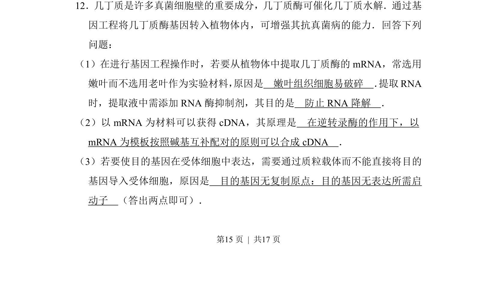
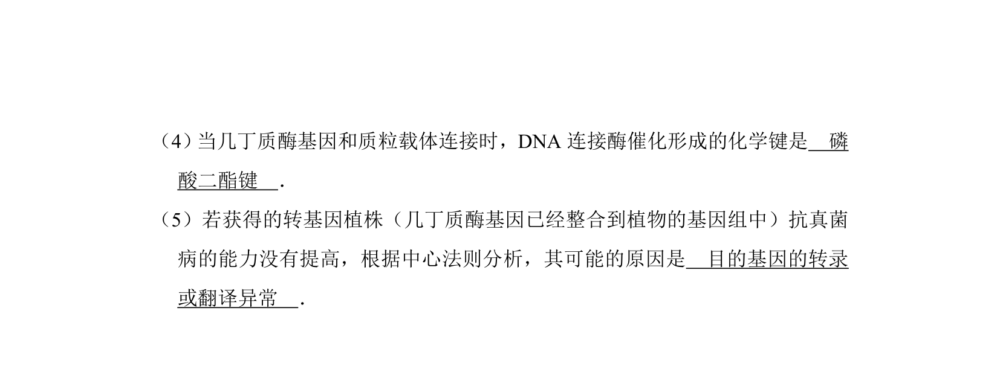
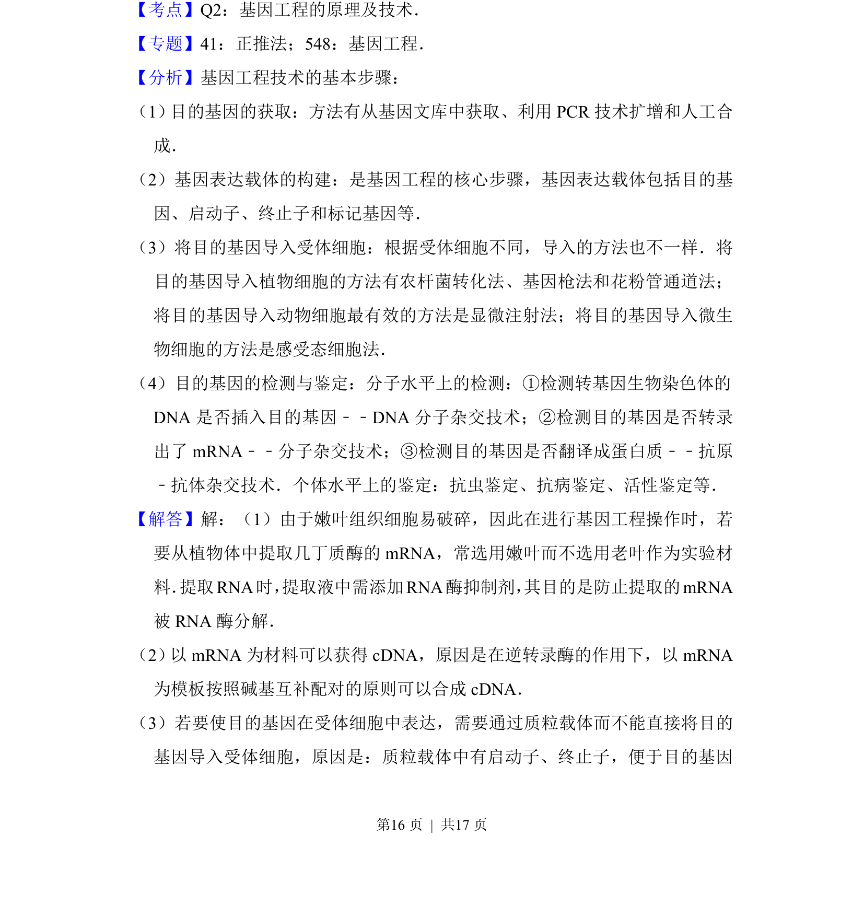
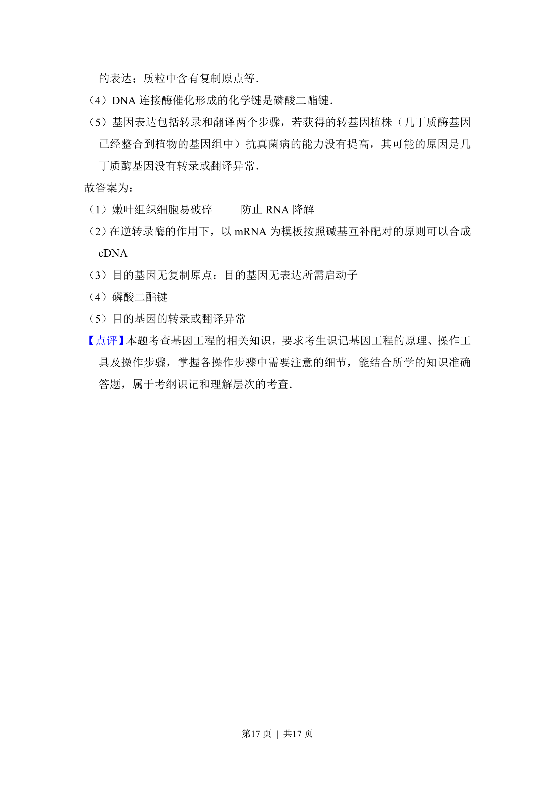

考点：基因工程 逆转录 质粒载体 RNA保护


本题主要考查基因工程中获取目的基因和构建表达载体的相关原理。


📄 原 PDF 第 15 页：
素材/真题/吉林/2008-2024·（吉林）生物高考真题/2017年高考生物试卷（新课标Ⅱ）（解析卷）.pdf
12．几丁质是许多真菌细胞壁的重要成分，几丁质酶可催化几丁质水解．通过基 因工程将几丁质酶基因转入植物体内，可增强其抗真菌病的能力．回答下列 问题： （1）在进行基因工程操作时，若要从植物体中提取几丁质酶的mRNA，常选用 嫩叶而不选用老叶作为实验材料， 原因是 嫩叶组织细胞易破碎 ． 提取RNA 时，提取液中需添加RNA酶抑制剂，其目的是 防止RNA降解 ． （2）以mRNA为材料可以获得cDNA，其原理是 在逆转录酶的作用下，以 mRNA为模板按照碱基互补配对的原则可以合成cDNA ． （3）若要使目的基因在受体细胞中表达，需要通过质粒载体而不能直接将目的 基因导入受体细胞，原因是 目的基因无复制原点：目的基因无表达所需启 动子 （答出两点即可）．